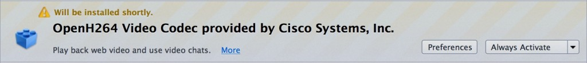

Web 是不受專利或特殊技術控制的開放生態系統 — 但影片目前仍屬例外。
今天在思科 (Cisco) 的協助之下，我們在 WebRTC 實作中新支援了 H.264 功能。基於不受專利控制的 Open Web 概念，當初 H.264 並非我們的首選。很可惜的，現有免費編碼工具的普及程度，尚未能足與 H.264 匹敵。Mozilla 仍將繼續支援 VP8 影片格式，但認為 VP8 已無更深層普及的潛力。如果能在 WebRTC 的影片編碼中達到最佳互通性，才能夠為使用者提供更好的服務，且 H.264 現已大量應用在通訊產業中，因此 Mozilla 認為自己做出了合理決定。
Mozilla 與思科合作建構 H.264 的過程其實頗為有趣。因為 MPEG LA 會收取 H.264 的專利權利金，所以 Mozilla 並無法直接將其導入 Firefox 之中。我們希望所有人均能在不支付MPEG LA 權利金的情況下，也同樣能散佈並使用 Firefox。
現行的折衷辦法，是思科同意由其發佈免費的 H.264 編碼器外掛程式 ─「OpenH264」。思科將 OpenH264 的開放源碼放上 Github，並由 Mozilla 與思科合作出一套程序，驗證該OpenH264 確實來自於公開的原始碼，進而確保系統的透明度與可信賴性。

OpenH264 當然不限於 Firefox 使用。只要是連網的應用程式也都能搭配作業。
思科的合作技術長 Jonathan Rosenberg 就說：「現在數百萬視訊裝置都支援 H.264。思科很高興能將 OpenH264 提供給 Firefox 使用者，讓大家都能享受相關裝置的娛樂效能。」
我們會持續開發完全開放的編碼，用以取代 H.264 (可參考 Daala)。目前 OpenH264 可讓連網的應用程式使用 H.264 而不需支付權利金，因此仍可說是 Open Web的重要進展。就意義上來說，OpenH264 雖非真正的開放，但至少是現有最開放且廣泛應用的影片編碼。
注意：因為 OpenH264 尚未支援串流影片常用的高畫質格式，所以在 Firefox 上僅能用於 WebRTC，而無法用於 <video> 標籤。一旦 OpenH264 能支援高畫質格式之後，Mozilla 就會考慮使其也能用於 <video> 標籤。
─ Mozilla 技術長 Andreas Gal